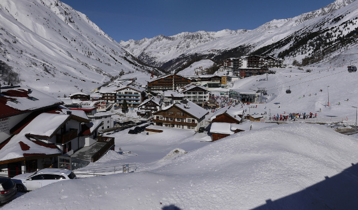
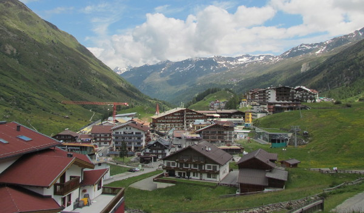

The official registration has been closed on February 1, however the Obergurgl center may still have some free rooms. If interested, please first inquire there and then email the organizers.
Large-scale semantic processing and strong computer assistance of mathematics and science is our inevitable future. New combinations of AI and reasoning methods and tools deployed over large mathematical and scientific corpora will be instrumental to this task. The AITP conference is the forum for discussing how to get there as soon as possible, and the force driving the progress towards that.
There will be three focused sessions on AI for ATP, ITP and mathematics, a (tutorial) session on modern AI and big-data methods, and several sessions with contributed talks. The focused sessions will be based on invited talks and discussion oriented.
We solicit contributed talks. Selection of those will be based on extended abstracts/short papers of 2 pages formatted with easychair.cls. Submission is via EasyChair (https://easychair.org/conferences/?conf=aitp2016) by 12 December 2015. The authors will be notified of acceptance/rejection by 23 December 2015. Camera-ready versions of the accepted contributions, due by 1 February 2016, will be published in an informal book of abstracts for distribution at the conference.
| Michael Kinyon. Loops and the AIM Conjecture: History and Progress |
| Robert Lewis and Leonardo de Moura: Automation and computation in the Lean theorem prover |
| Michael Färber and Chad Brown: Machine learning in Satallax |
| Ioanna M. Dimitriou H. and Peter Koepke: Revisiting Paulson's Theory of the Constructible Universe with Isar and Sledgehammer |
| Thibault Gauthier, Cezary Kaliszyk, Josef Urban and Jiří Vyskočil: Conjecturing over Large Corpora |
| Claudia Schon and Ulrich Furbach: Commonsense Reasoning meets Theorem Proving |
| Jana Kittelmann and Christoph Wernhard: Towards Knowledge-Based Assistance for Scholarly Editing |
| Shuai Wang. Higher Order Proof Engineering: Proof Collaboration, Transformation, Checking and Retrieval |
| Jan Jakubuv and Josef Urban: Machine Learning of Given Clause Selection in E Prover |
The (extended) abstracts of all the invited and contributed talks are now available online.
Submissions are now open to a Special Issue of AI Communications on Automated Reasoning.
| Abstract submission | January 8, 2017 |
| Paper submission | January 15, 2017 |
| Notification of acceptance | April 15, 2017 |
| Final versions | June 15, 2017 |
We will publish post-proceedings in an open-access series of conference proceedings, such as
LIPIcs, JMLR, or EPiC. Submission to that volume will be open
for everyone. Tentative submission deadline: May 2016.
| Marcos Cramer | Universiy of Luxembourg |
| Thomas C. Hales (co-chair) | University of Pittsburgh |
| Tom Heskes | Radboud University Nijmegen |
| Sean Holden | University of Cambridge |
| Cezary Kaliszyk (co-chair) | University of Innsbruck |
| Michael Kohlhase | Jacobs University |
| Ramana Kumar | Data61 & UNSW |
| John Lafferty | University of Chicago |
| Lawrence Paulson | University of Cambridge |
| Stephan Schulz (co-chair) | DHBW Stuttgart |
| Geoff Sutcliffe | University of Miami |
| Josef Urban (co-chair) | Czech Technical University in Prague |
| Sunday: departure by bus from Innsbruck around 11am, arrival in Obergurgl around 1pm, lunch, check-in at 2pm, first session from 2:30pm to 6pm, dinner at 6:30pm. |
| Monday-Wednesday: Breakfast, morning session 8:30-11:30, free (skiing etc.) time until 4pm, afternoon session 4pm-6:30pm, dinner at 6:30pm. |
| Thursday: check-out by 10am, bus leaves at 10:30, arrival in Innsbruck between 12:30 and 13:30 (depends on weather conditions and traffic jams). The bus will first stop at the airport and then in the city center (main railway station). |
| 13:00-14:30 | lunch and check-in |
| 14:30-16:20 |
Welcome Thomas C. Hales Automation in the Formal Proof of the Kepler Conjecture Sean Holden Machine learning for automatic theorem proving: the story so far |
| 16:20-16:50 | coffee break |
| 16:50-18:30 |
Cezary Kaliszyk Modular Architecture for Proof Advice Geoffrey Irving An Overview of Deep Learning |
| 18:30 | dinner |
| 8:30-10:10 |
Stephan Schulz Induction Controlling Deduction Robert Veroff Clause Selection in Resolution-style Theorem Provers |
| 10:10-10:40 | coffee break |
| 10:40-11:30 |
Martin Suda When Should We Add Theory Axioms And Which Ones? |
| 11:30-16:00 | free time |
| 16:00-16:30 | coffee break |
| 16:30-18:30 |
Michael Kinyon Loops and the AIM Conjecture: History and Progress Jan Jakubuv Machine Learning of Given Clause Selection in E Prover Shuai Wang Proof Engineering of Higher Order Logic: Collaboration, Transformation, Checking and Retrieval |
| 18:30 | dinner |
| 8:30-10:00 |
Noriko Arai Can a machine solve university entrance exam math problems automatically? Takuia Matsuzaki Solving Natural Language Math Problems |
| 10:00-10:30 | coffee break |
| 10:30-12:00 |
Deyan Ginev Math-rich Natural Language Processing (NLP) on Billion Token Corpora Jiri Vyskocil Probabilistic Parsing of Mathematics |
| 12:00-17:20 | free time |
| 17:20-18:30 |
AITP Discussion AITP: How Do We Combine Our Forces? |
| 18:30 | dinner |
| 8:30-10:10 |
Robert Lewis Automation and computation in the Lean theorem prover Michael Faerber Machine learning in Satallax |
| 10:10-10:40 | coffee break |
| 10:40-11:30 |
Peter Koepke Revisiting Paulson's Theory of the Constructible Universe with Isar and Sledgehammer |
| 11:30-16:00 | free time |
| 16:00-16:30 | coffee break |
| 16:30-18:30 |
Ulrich Furbach Commonsense Reasoning meets Theorem Proving Christoph Wernhard Towards Knowledge-Based Assistance for Scholarly Editing Thibault Gauthier Conjecturing over Large Corpora |
| 18:30 | dinner |
The conference will take place from April 3 to April 7 in the stunning scenery of the Tyrolean Alps in the Obergurgl Conference Center of the University of Innsbruck. The pictures of the rooms are here. Obergurgl is a picturesque village located at an altitude of 2000m, a 1-hour drive from Innsbruck. It offers a variety of winter-sport activities such as skiing, snowshoeing and hiking at this time of the year. The total price for accommodation, food and registration for the four days will be around 500 EUR.
You can rent skis/snowboards/boots/helmets in Obergurgl or already in
Innsbruck. It might be hard to rent clothing in Obergurgl, but it is
possible in Innsbruck (e.g., here).
Ski+Boots rental per day:
30-50Euros per day (depending on the quality).
Obergurgl daily ski passes:
From noon: 40Euros.
From 11am: 45Euros.
3 days: 143Euros
Here are two photos of the village
taken from the conference center.
 
| We thank the University of Innsbruck for their support of the Obergurgl conference center. |
| The conference was partly funded from the European Research Council (ERC) under the EU-H2020 project AI4REASON no. 649043. |
| We thank Andrei Voronkov and his EasyChair for his help with reviewing, registration, and the informal proceedings |
{kind=link}